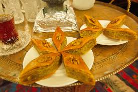

Baku is the capital and largest city of Azerbaijan, as well as the largest city on the Caspian Sea and in the Caucasus region. Baku is 28 metres (92 ft) below sea level, which makes it the lowest lying national capital in the world and also the largest city in the world below sea level. Baku lies on the southern shore of the Absheron Peninsula, on the Bay of Baku. Baku's urban population was estimated at two million people as of 2009. Baku is the primate city of Azerbaijan—it is the sole metropolis in the country, and about 25% of all inhabitants of the country live in Baku's metropolitan area.

Typical Azerbaijani desserts are sticky, syrup-saturated pastries such as pakhlava and shaki halva. The former, a layer of chopped nuts sandwiched between mats of thread-like fried dough, is a specialty of Shaki in northwest Azerbaijan. Other traditional pastries include shekerbura (crescent-shaped and filled with nuts), shorgoghal (round pastry filled with spices and salt) and badambura (decorated pastry filled with ground almonds, sugar, and cardamom).
